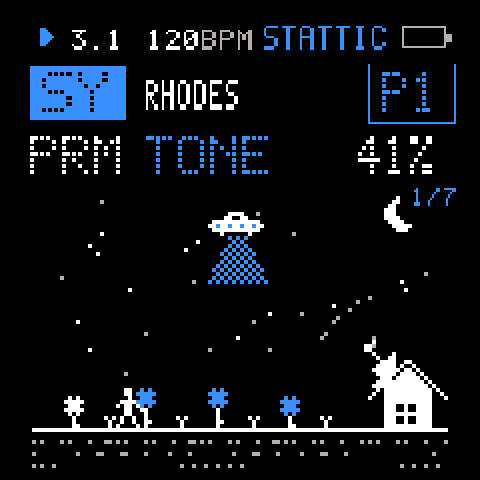
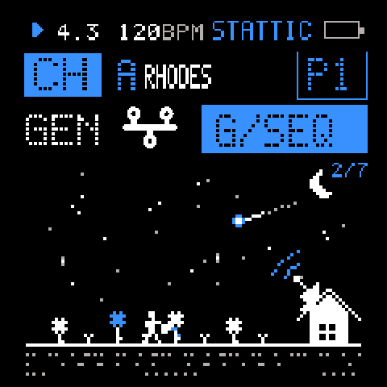
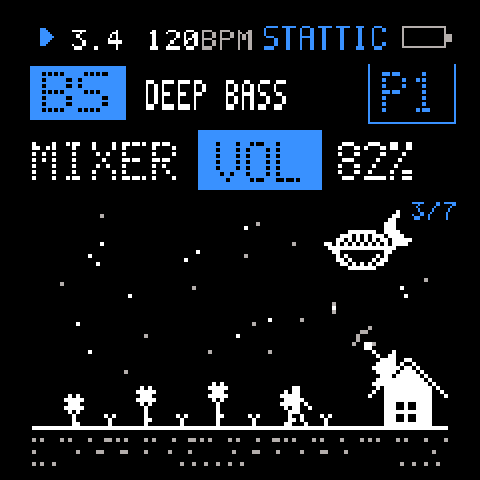
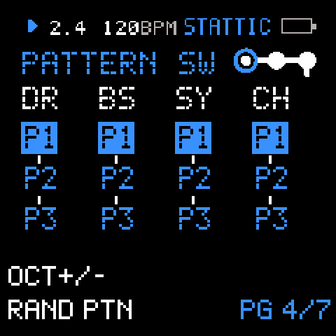
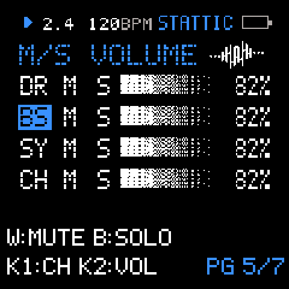
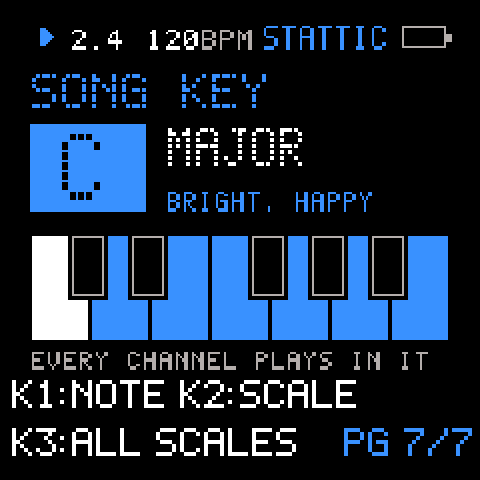

STATTIC
STATTIC turns the M-VAVE FM-1 into a generative instrument. It writes melodies, bass lines, chords and rhythms for you and plays them on four channels: micro drums, an FM bass, a synth and a chord voice. Turn a knob and a new phrase, a new sound or a new space arrives, in time, gliding in. It is made for building music on the fly and playing it live, without menus.
Styles it feels at home in: ambient, IDM, glitch, downtempo, chillout, lo-fi, electronica, minimal, dub-tinged textures, experimental, with 8-bit / chiptune touches. An AMBIENT generator writes few, long notes and held chords; the energetic one writes busier lines.






The night garden
The first three HOME pages share one small 1-bit scene that plays along with the music: a little man walks a step a beat and waters the garden, four flowers flash when their channel plays, the stars sparkle on the hats. Each knob calls a guest into the sky, a UFO, a planet, an astronaut or a comet, one after another, and the house's dish sends your turns into space.
HOME: seven pages
A short press of HOME brings you here. SELECT turns the pages, ALGORITHM picks the channel (DR, BS, SY, CH), PLAY starts and stops.
| Page | Knobs K1–K4 | Buttons |
|---|---|---|
| 1 · PLAY | The channel's four main controls (tone, shape, decay… on DR: filter, drive, bend, length) | PRESET: the next sound (on DR new drum sounds) · OCT−/+: octave · CH: hold OCT+ for chords or notes |
| 2 · GENERATE | K1 a new sequence · K2 a new sound · K3 new movement (LFOs) · K4 new effects (on BS: new parameter changes per step) · on DR: K1–K4 new kick, snare, hat, percussion | OCT−: clear this channel's pattern · OCT+: clear all |
| 3 · MIXER | Volume · pan · filter · width | OCT−/+: octave |
| 4 · PATTERNS | Each knob picks pattern 1–3 of its channel | OCT−/+: a random pattern on every channel |
| 5 · MUTE / SOLO | K1 picks the channel · K2 its volume | White keys 1–4: mute · black keys 1–4: solo |
| 6 · PROJECTS | K1 picks slot A–D · K2 save · K3 erase · K4 open (turn twice to confirm) | — |
| 7 · SONG KEY | K1 the key note (C, C#, D…) · K2 the scale (major, minor, dorian, mixolydian, lydian, phrygian, pentatonics, harmonic minor) · K3 all 34 scales | — |
The key is the whole song’s: all channels play in it, and the notes already written move along when you change it. Changes land in time with the music, so you can keep turning while it plays. EDIT + OCT−/+ is undo / redo. Holding HOME opens the system menu; the other buttons (ENV, LFO, FX, SEL, EDIT, ARP, SEQ, GLO) open the deeper windows. Everything is in the manual.